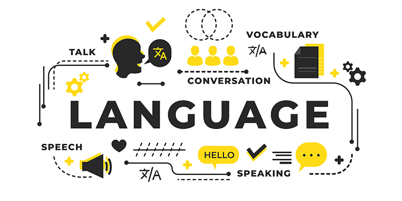

Языковые курсы "Flearning"
В рамках языковых курсов предоставляется гибкий подход к обучению. Программы разработаны для адаптации к уровню знаний каждого студента, включая различные виды учебных материалов - от видеоуроков до интерактивных заданий. Гибкий график и онлайн-формат обучения обеспечивают свободу выбора для учащихся. Привилегии: Наши студенты имеют привилегии, которые улучшают их образовательный опыт. Они включают доступ к индивидуальным консультациям с преподавателями, дополнительным обучающим материалам, приоритет при записи на занятия, сертификаты завершения и участие в эксклюзивных мероприятиях и возможностях. Эти привилегии способствуют более эффективному обучению и повышают мотивацию студентов.